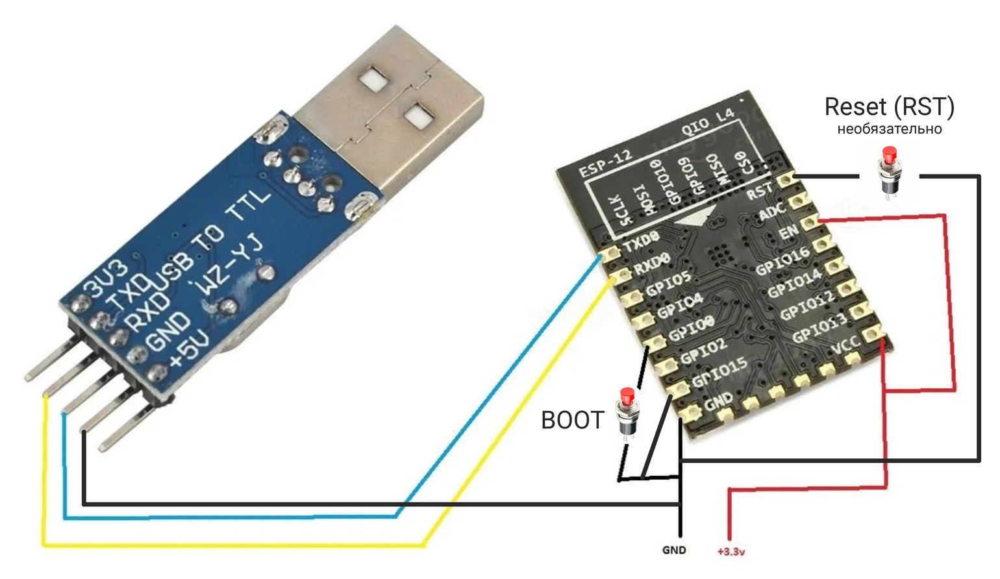
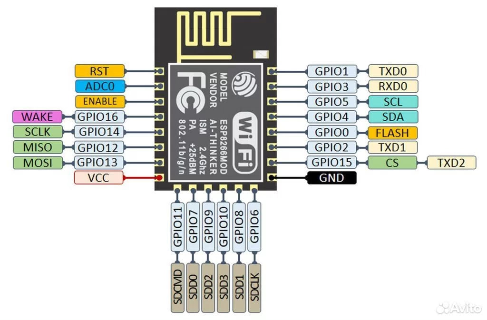

Как прошить ESP-12F (ESP8266) с помощью USB UART TTL программатора
Инструкция подходит для ESP-12F, ESP-12E и ESP-12S. И для других ESP тоже, но там будут нюансы (читайте как прошить ESP-32-Wrover-IB и подобные, как прошить ESP-01 и подобные).
Схема подключения и перемычек

Пины на ESP -> Пины на USB UART TTL
RX -> TX (на перекрёст!)
TX -> RX (на перекрёст!)
VCC -> 3.3 В
GND -> GND
Также понадобятся перемычки (закоротить) на ESP:
EN <-> VCC
GPIO15 <-> GND
Также понадобятся 2 кнопки:
GND <-> Кнопка <-> GPIO0 (BOOT - для перевода в режим программирования)
GND <-> Кнопка <-> RST (Reset - необязательно, для того что бы перезагружать, без передёргивания питания)
Внимание!
Питания с 3.3 В USB UART TTL - может не хватить для старта и нормальной работы микроконтроллера - поэтому, подключите питание с другого источника 3.3 В. Однако, земля (GND) всё равно должна быть соединена с землёй (GND) - USB UART TTL.
***
Какой программатор подойдёт?
Подойдёт любой UART USB TTL программатор.
Я использовал CH340G, также пробовал такой быстрозажимной (он на том же чипе CH340G, к слову с этим программатором можно не зажимать кнопки - просто нажимаете в Arduino IDE - Отправить прошивку - и программатор сам переводит ESP в режим программирования, также после окончания прошивки сам перезагружает в обычный режим и запускает).
***
В какой программе прошивать?
Этот способ подходит для всего, что найдёте: Arduino IDE, Flash Download Tools, PlatformIO и другое.
Как установить Board esp8266 в Arduino IDE?
Коротко: http://arduino.esp8266.com/stable/package_esp8266com_index.json
Длиннее: https://wiki.iarduino.ru/page/WEMOS_start/
Какую Board выбрать в Arduino IDE для ESP-12?
Tools -> Board -> esp8266 ->
NodeMCU 1.0 (ESP-12E Module)
***
Процесс прошивки (переход в режим программирования)
Также можно обойтись без кнопки RST:
***

Переход в обычный режим (обычный запуск)
Также можно обойтись без кнопки RST:
Более длинная статья по теме:
https://esp8266.ru/esp8266-podkluchenie-obnovlenie-proshivki/
P.S.: Если что-то пошло не так — пишите в Telegram (ник: first_Andres) - разберёмся.
Связаться с автором Поддержать деньгами (что?)